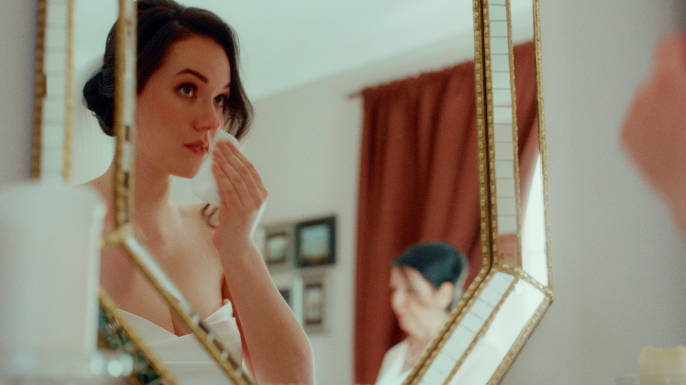
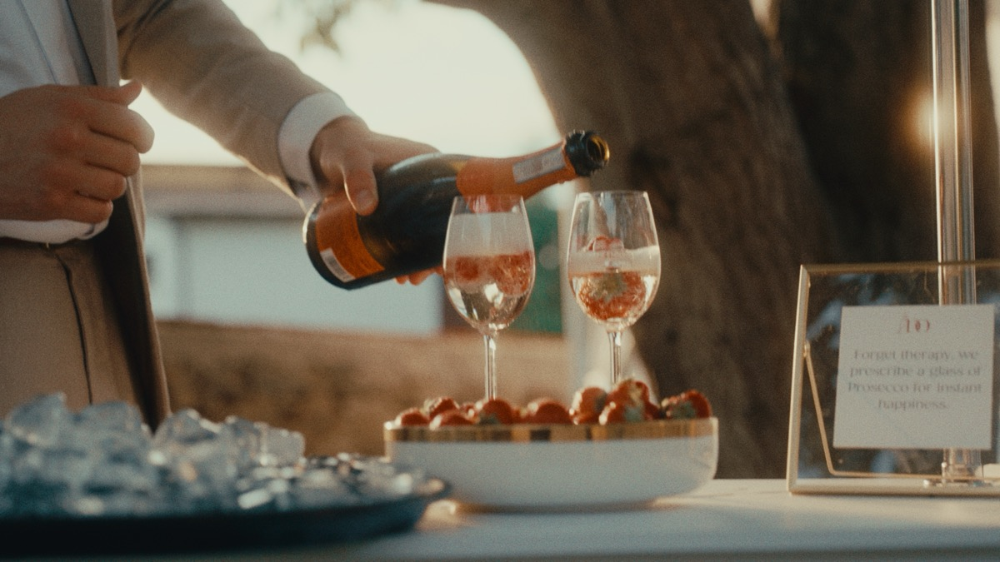
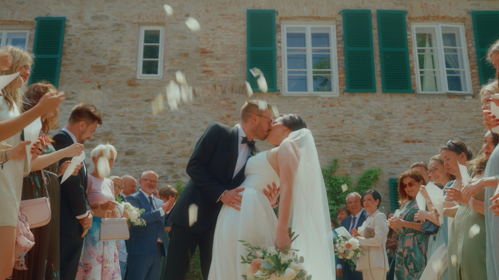
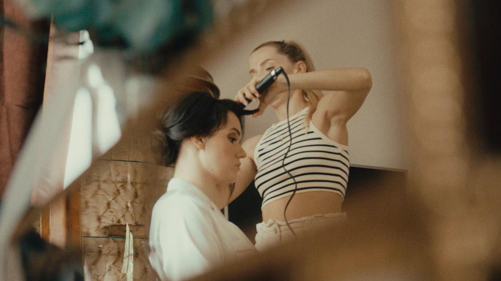
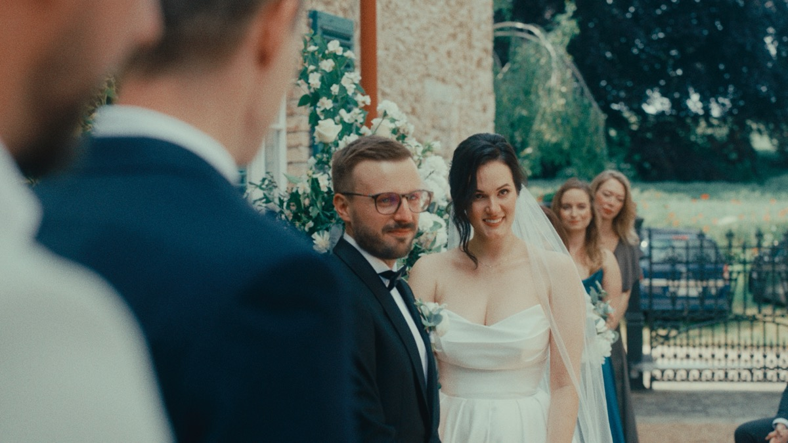
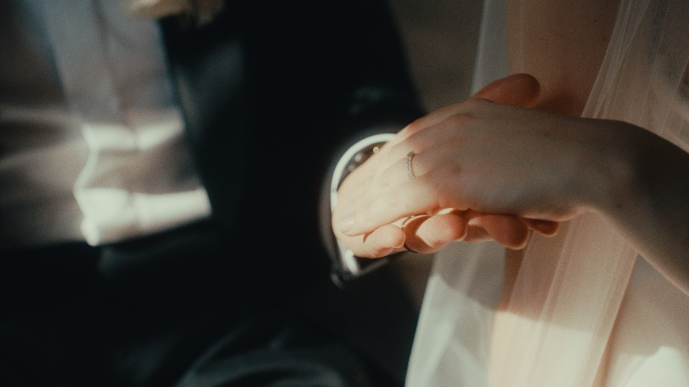
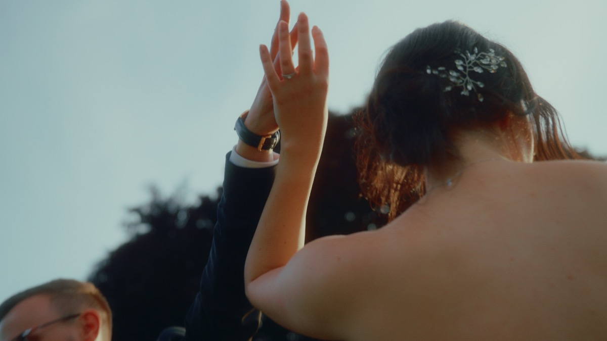

Cliente · Film di matrimonio
Film di matrimonio · Praga · 2023
Copertura documentaristica e film di Francesco La Rosa
La coppia è stata incontrata direttamente — nessun wedding planner in sala per il brief creativo. Francesco ha mostrato loro un film precedente come riferimento di stile e ritmo. Quello che chiedevano era preciso: discreto, naturale, niente di messo in scena.

Il vero soggetto del film non è la cerimonia — è il tempo che passa. Nuvole, alberi, luce che cambia, riflessi: usati in modo strutturale, non decorativo, per portare la giornata dall'arrivo alla festa. Solo luce naturale, nessun allestimento costruito, con un filtro diffusore a definire la texture dell'immagine per tutto il film.
Una produzione relativamente piccola, in spazi relativamente piccoli — il che ha reso la coppia e i loro ospiti più facili da avvicinare rispetto a un matrimonio più grande e formale. La logistica era semplice: trasporto personale, coordinamento diretto con il wedding planner. L'unica richiesta specifica arrivata a metà progetto è stata di dare più attenzione alla parte finale della serata.

La prova più chiara del metodo è arrivata dopo: pur non parlando bene il ceco, il film finito ha catturato le conversazioni, le interazioni e il ritmo della giornata con una precisione tale che la coppia ha sentito che tutto era stato compreso davvero. Non è una competenza linguistica — è ciò che l'osservazione visiva può fare quando l'intervento resta minimo.

Alcuni frame estratti direttamente dal film finito — luce naturale, nessun allestimento costruito.




Prenotato tramite un cliente ricorrente — prima per un lavoro automotive, poi per il proprio matrimonio.
Per coppie che vogliono un film di matrimonio documentaristico capace di reggere in una lingua, cultura o ambientazione che non è quella di Francesco.